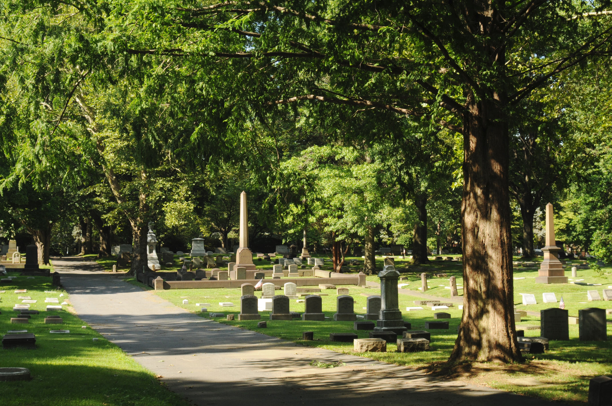

Nestled in the heart of Bethlehem, PA, Nisky Hill Cemetery stands as a testament to the rich history and enduring legacies of those who have shaped our community. With its peaceful landscape and centuries-old headstones, the cemetery is more than a final resting place—it is a space for remembrance, reflection, and historical discovery.

Nisky Hill Cemetery and Bethlehem Area Historical records are accessible online via our interactive map.
Our interactive map is still in production. It is expected to be completed by Q4 2025.
Located at the corner of Church and Market Streets, Nisky Hill Cemetery was founded in 1849. Owned by the Bethlehem Area Moravians, Nisky Hill is the final home for thousands of Bethlehemites of various faiths and origins.
In this tour, you will explore the burials and histories of dozens of war heroes, artists, and businessmen, and visit a few of the more unusual monuments found within the cemetery grounds.